Guía completa para planificar reservas, inspeccionar equipos, programar mantenimiento y seguir la
flota de vehículos y maquinaria pesada en Maracaibo, Caracas, Valencia y Cúcuta.
Versión0.1.0 · Fase 1
FechaNoviembre de 2026
Módulos8 + administración
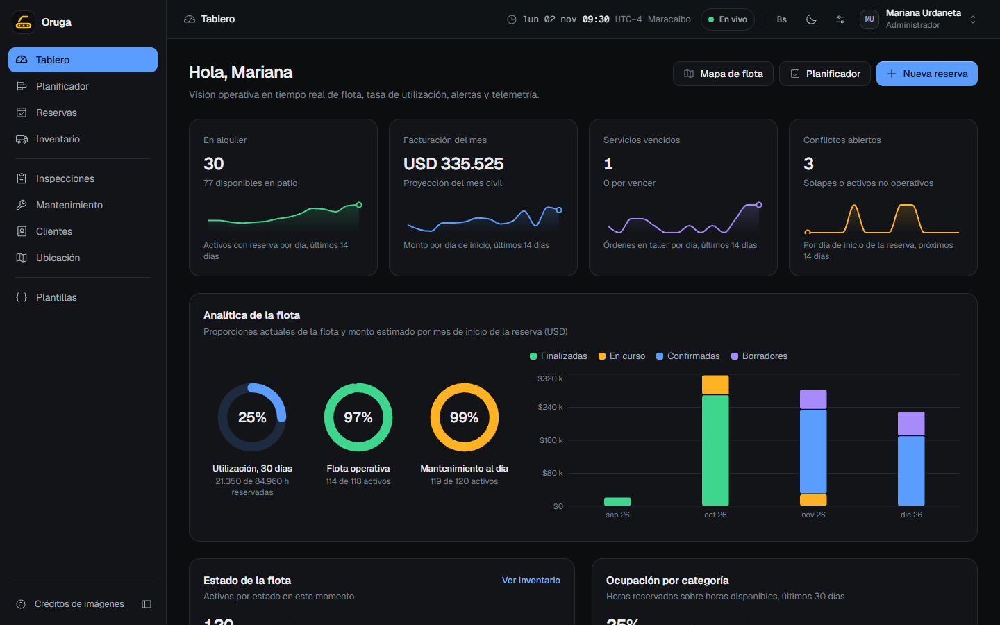
Contenido
Introducción
Qué es Oruga, a quién está dirigido este manual y qué necesitas para empezar.
¿Qué es Oruga?
Oruga es un sistema web para empresas que alquilan vehículos y maquinaria pesada. Reúne en un solo
lugar todo el ciclo de un alquiler: el registro de la flota y de los clientes, la reserva y su
cotización, la inspección del equipo al salir y al volver del patio, el mantenimiento preventivo y
correctivo, y el seguimiento de la ubicación de cada unidad.
La aplicación se organiza en ocho módulos operativos y un módulo de administración:
Módulo
Para qué sirve
Tablero
Indicadores del negocio, alertas que piden una decisión y operaciones del día.
Planificador
Calendario de toda la flota: crear, mover y reasignar reservas arrastrándolas.
Reservas
Contratos de alquiler: cotización con tarifa óptima, estados y bitácora de cambios.
Inventario
Catálogo de activos, ficha técnica, documentos y estado operativo.
Inspecciones
Actas de salida, devolución y rutina con veredicto automático y comparación.
Mantenimiento
Órdenes de taller y planes preventivos por horas, kilómetros o días.
Clientes
Directorio de empresas y personas, bloqueo administrativo e historial.
Ubicación
Mapa con la posición de cada activo en tiempo real y alertas de geocerca.
Plantillas
Administración de los formularios de inspección (solo administradores y gerencia).
Sobre este manual
El manual está pensado para todas las personas que usan Oruga en el día a día: administración,
planificación, inspección de patio, jefatura de mantenimiento y gerencia. El capítulo
Roles y permisos
indica qué partes aplican a cada rol.
Para leerlo con facilidad se usan estas convenciones:
Los botones y opciones de la pantalla aparecen así: Nueva reserva.
Las rutas de navegación se escriben con flechas:
Inventario › Ficha técnica.
Los números 1 sobre las capturas se explican en la lista que sigue a cada
figura.
Las teclas aparecen así: Ctrl + Z.
Datos de las capturas
Todas las capturas se tomaron de la aplicación real con un juego de datos de demostración: 120
activos, 60 clientes y más de 400 reservas. Los nombres, documentos y montos son ficticios.
Requisitos y acceso
Un navegador actualizado: Chrome, Edge, Firefox, Brave o Safari.
Una pantalla de 1280 píxeles de ancho o más para trabajar con comodidad. Oruga también funciona en
tabletas y teléfonos.
Conexión a Internet para ver los mapas del módulo Ubicación.
En esta fase, Oruga se ejecuta en el propio equipo. Con Node.js 20 o superior instalado, abre una
terminal en la carpeta del proyecto y ejecuta npm install y luego
npm run dev. Después abre en el navegador la dirección que indica la terminal,
normalmente http://localhost:5173.
Abre la aplicación desde localhost o con HTTPS
La protección de las claves usa funciones criptográficas que el navegador solo habilita en
localhost y en sitios seguros (HTTPS). Desde otra dirección no podrás iniciar sesión.
Dónde se guardan los datos
La fase 1 de Oruga no tiene un servidor central: la información se guarda en una base de datos local
del navegador (IndexedDB). Esto tiene tres consecuencias prácticas:
La base arranca vacía. Solo vienen precargados los catálogos: las cuatro sedes, las
categorías de equipos, las plantillas de inspección, los planes de mantenimiento y las cinco cuentas
de demostración. Los activos, clientes, reservas, inspecciones y órdenes los registras tú.
Los datos viven en ese navegador. Si abres Oruga en otro equipo, en otro navegador
o en una ventana privada, verás otra base distinta.
Borrar los datos del sitio borra la base. Si limpias el historial con los datos de
sitios, o usas Vaciar base de datos en el
panel de desarrollo, la información se pierde. Las cuentas de
demostración se vuelven a crear solas.
El reloj de la demostración
Oruga funciona con un reloj propio que empieza el
lunes 2 de noviembre de 2026 a las 09:30
(hora de Maracaibo) cada vez que abres la aplicación y avanza en tiempo real. Las fechas de "hoy", los
vencimientos y las operaciones del día se calculan con ese reloj, que siempre ves en la cabecera.
Primeros pasos
Cómo entrar a Oruga, crear tu cuenta y cerrar la sesión.
Iniciar sesión
Al abrir Oruga aparece la pantalla de acceso. A la izquierda está el formulario y, debajo, la lista de
cuentas de demostración. A la derecha, una escena animada con la flota.
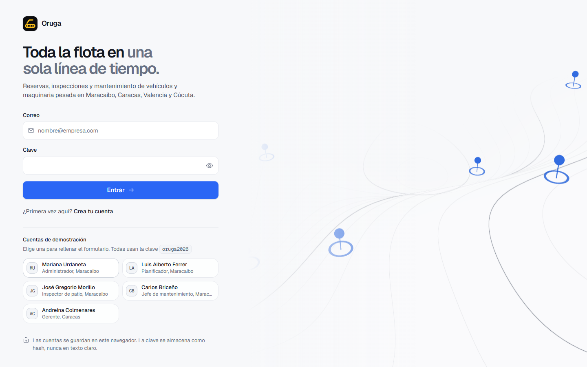
Pantalla de acceso con las cuentas de demostración.
Escribe tu correo en Correo.
Escribe tu clave en Clave. El ícono del ojo la muestra u oculta mientras escribes.
Pulsa Entrar. Oruga te lleva al primer módulo que tu rol puede abrir
y te saluda con un mensaje.
Si el correo o la clave no coinciden, el formulario muestra "Correo o clave incorrectos." y
no se borra lo que escribiste, para que puedas corregirlo.
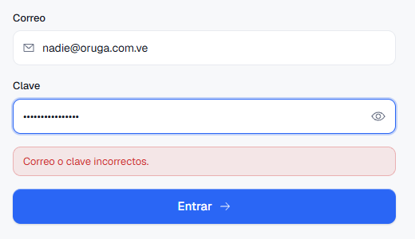
Mensaje cuando el correo o la clave no son válidos.
Cuentas de demostración
Oruga incluye una cuenta por cada rol. Al pulsar una tarjeta de la lista
Cuentas de demostración se rellenan el correo y la clave; después solo tienes que
pulsar Entrar. Todas usan la clave oruga2026.
Persona
Rol
Sede
Correo
Mariana Urdaneta
Administrador
Maracaibo
mariana.urdaneta@oruga.com.ve
Luis Alberto Ferrer
Planificador
Maracaibo
luis.ferrer@oruga.com.ve
José Gregorio Morillo
Inspector de patio
Maracaibo
jose.morillo@oruga.com.ve
Carlos Briceño
Jefe de mantenimiento
Maracaibo
carlos.briceno@oruga.com.ve
Andreína Colmenares
Gerente
Caracas
andreina.colmenares@oruga.com.ve
Crear una cuenta
Desde la pantalla de acceso, pulsa Crea tu cuenta. El formulario de registro pide:
Nombre y apellido.
Correo, que no puede estar registrado antes.
Clave, de al menos 8 caracteres.
Rol, que define lo que verás en la aplicación (por defecto, Planificador).
Sede donde trabajas.
Al pulsar Crear cuenta y entrar, Oruga crea la cuenta e inicia la
sesión de inmediato. Si falta algún dato verás el aviso junto al campo, por ejemplo
"La clave debe tener al menos 8 caracteres."
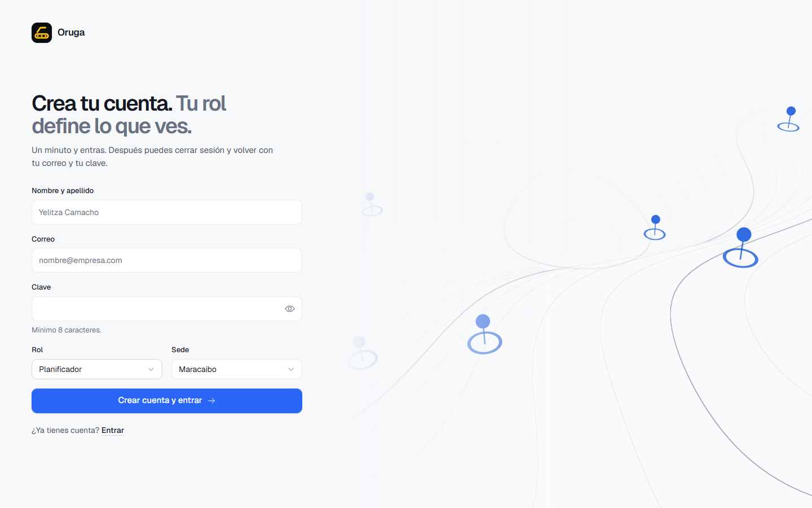
Registro de una cuenta nueva.
Tu clave está protegida
Oruga no guarda la clave tal como la escribes: guarda una huella cifrada (hash) que no se puede
revertir. Aun así, las cuentas se guardan en el navegador, así que protege el acceso al equipo.
Volver a donde estabas
Si abres un enlace de Oruga sin haber iniciado sesión, por ejemplo la ficha de una reserva que te
enviaron, la aplicación te pide entrar primero y luego te lleva directamente a esa página. Lo mismo
ocurre si la sesión deja de ser válida mientras trabajas.
Uso en el teléfono y la tableta
Oruga se adapta a pantallas pequeñas. En anchos menores a 1024 píxeles, el menú lateral se oculta
y se abre con el botón Abrir menú de la cabecera.
Para tareas de patio, como las inspecciones, el teléfono es suficiente. Para el Planificador y el
mapa se recomienda una pantalla más grande.
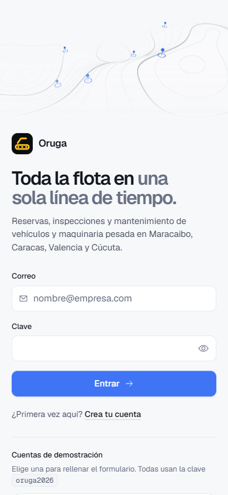
Acceso desde un teléfono.
Cerrar sesión
Pulsa tu nombre en la esquina superior derecha. El menú de la cuenta muestra tu nombre, correo, rol y
sede. Elige Cerrar sesión para salir.
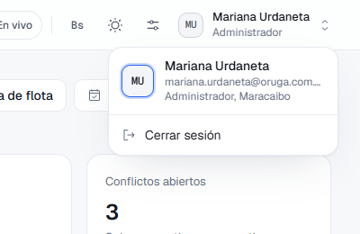
Menú de la cuenta con la opción para cerrar la sesión.
La interfaz
Las piezas que se repiten en todas las pantallas y cómo ajustarlas a tu gusto.
Vista general
Todas las pantallas comparten la misma estructura: un menú lateral a la izquierda, una cabecera arriba
y el contenido del módulo en el centro.
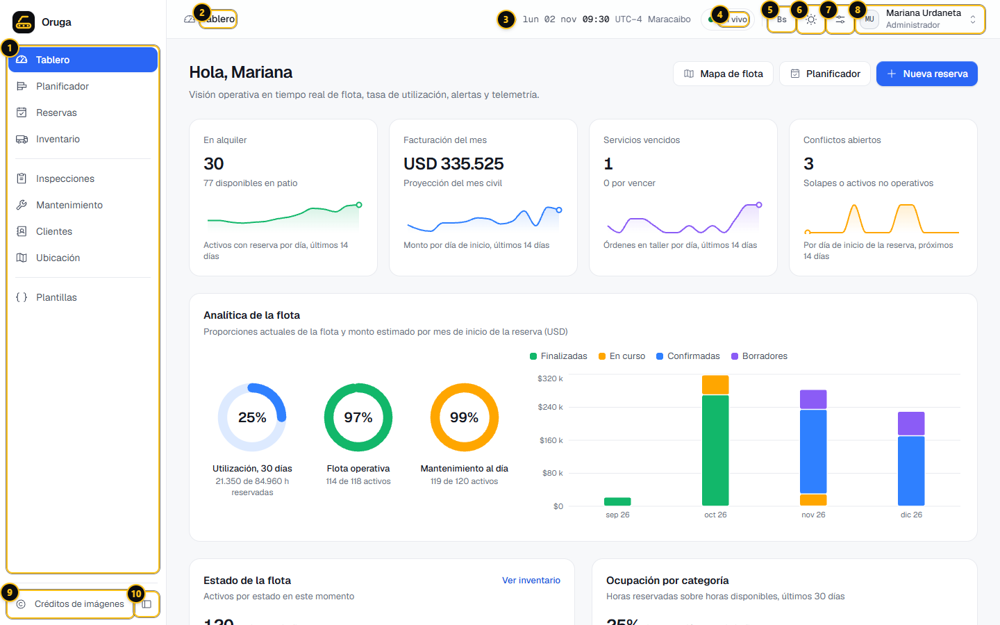
Estructura común de la aplicación.
1Menú de módulos. Solo muestra los módulos que tu rol
puede abrir.
2Módulo actual. Nombre e ícono de la pantalla en la que
estás.
3Reloj. Fecha y hora de la demostración, zona horaria y
ciudad.
4Estado en vivo. Indica si llegan las actualizaciones en
tiempo real.
5Bs. Muestra u oculta el equivalente de los montos en
bolívares.
6Tema. Cambia entre tema claro, oscuro o el del sistema.
7Panel de desarrollo. Herramientas para pruebas (ver
capítulo 15).
8Cuenta. Tu nombre y rol; desde aquí cierras la sesión.
9Créditos de imágenes. Autores y licencias de las
fotografías.
10Contraer menú. Reduce el menú lateral a solo íconos.
Menú lateral
Los módulos se agrupan en tres bloques separados por una línea: la operación comercial (Tablero,
Planificador, Reservas e Inventario), el trabajo de patio (Inspecciones, Mantenimiento, Clientes y
Ubicación) y la administración (Plantillas). El módulo activo aparece resaltado en azul.
El botón Contraer menú, al pie del menú, deja solo los íconos para ganar
espacio; vuelve a pulsarlo (Expandir menú) para ver los nombres. Oruga
recuerda tu preferencia.
Reloj y estado en tiempo real
El reloj de la cabecera muestra la fecha y hora de la demostración con la zona horaria (UTC−4) y la
ciudad de tu sede. A su lado, una píldora indica el estado de las actualizaciones en vivo:
Estado
Significado
En vivo
Llegan los cambios en tiempo real: posiciones del mapa cada 4 segundos y ajustes de reservas.
Pausado
Las actualizaciones están detenidas. Los datos se refrescan al volver a consultar.
Sin señal
Se perdió la conexión con el servicio de eventos.
Montos en bolívares
Los precios y montos se expresan en dólares (USD). El botón Bs de la cabecera
agrega junto a cada monto su equivalente en bolívares, calculado con la tasa de cambio configurada. En
esta versión la tasa es una referencia simulada del BCV. Vuelve a pulsarlo para ocultar los bolívares.
Tema claro y oscuro
El botón con el ícono del sol abre el menú Tema con tres opciones:
Según el sistema (sigue la configuración del equipo), Oscuro y
Claro. La elección se guarda para la próxima vez.
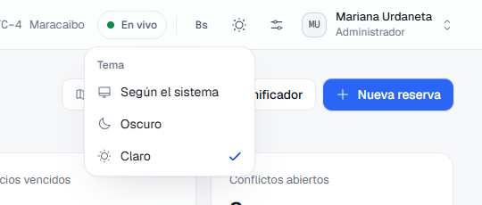
Menú para elegir el tema.El Tablero con el tema oscuro.
Mensajes, cargas y errores
Avisos emergentes. Las confirmaciones ("Reserva creada", "Reserva reprogramada") y
los errores aparecen unos segundos en la esquina inferior derecha.
Cargas. Mientras llegan los datos verás bloques grises animados con la forma del
contenido.
Errores aislados. Si un módulo falla, solo ese módulo muestra el error; el resto de
la aplicación sigue funcionando.
Confirmaciones. Las acciones que cambian datos importantes (cancelar una reserva,
cambiar el estado de un activo) piden un motivo antes de aplicarse.
Atajos de teclado
Teclas
Acción
Tab al cargar la página
Muestra el enlace Saltar al contenido para ir directo al módulo.
Ctrl + Z (⌘ + Z en Mac)
En el Planificador, deshace el último movimiento de una reserva.
Enter o Espacio
Abre la fila o la reserva seleccionada en el Planificador.
Esc
Cierra diálogos, menús y paneles laterales.
Roles y permisos
Cada cuenta tiene un rol que decide qué módulos ves y qué acciones puedes hacer.
Los cinco roles
Administrador. Acceso completo a todos los módulos y acciones, incluida la edición
de plantillas.
Planificador. Gestiona reservas de principio a fin y registra o edita clientes.
Consulta el resto.
Inspector de patio. Realiza inspecciones y entrega o recibe los equipos en el
patio. Al entrar, va directo al Planificador.
Jefe de mantenimiento. Gestiona las órdenes de taller y los planes preventivos, y
cambia el estado operativo de los activos.
Gerente. Consulta toda la información, incluidas las plantillas, sin modificar
nada.
Matriz de permisos
Módulo
Administrador
Planificador
Inspector
Mantenimiento
Gerente
Tablero
Total
Ver
—
Ver
Ver
Planificador y Reservas
Total
Total
Ver, entregar y recibir
Ver
Ver
Inventario
Total
Ver
Ver
Ver y cambiar estado
Ver
Inspecciones
Total
Ver
Ver y crear
Ver
Ver
Mantenimiento
Total
Ver
Ver
Total
Ver
Clientes
Total
Ver, crear y editar
Ver
—
Ver
Ubicación
Total
Ver
Ver
Ver
Ver
Plantillas
Total
—
—
—
Ver
Cómo se reflejan los permisos
Oruga oculta lo que tu rol no puede usar, en lugar de mostrarlo deshabilitado. Por
eso el menú lateral cambia según la cuenta:
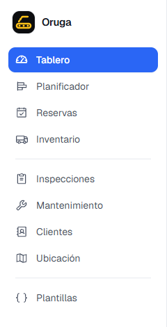
Administrador
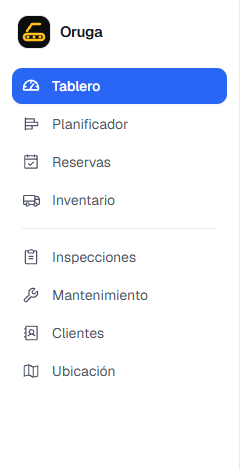
Planificador
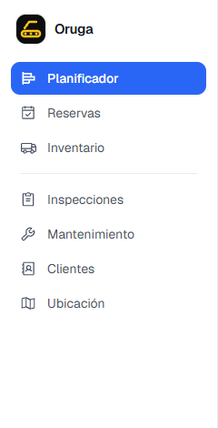
Inspector
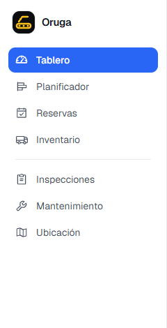
Mantenimiento
Gerente
Del mismo modo, los botones de acción (por ejemplo Nuevo activo o
Nueva reserva) solo aparecen para los roles que pueden usarlos, y en el
Planificador las barras solo se pueden arrastrar si tu rol puede mover reservas.
Si abres directamente la dirección de un módulo que tu rol no puede ver, Oruga muestra el aviso
"Tu rol no tiene acceso a este módulo", explica qué roles sí pueden abrirlo y ofrece el botón
Ir a mi inicio.
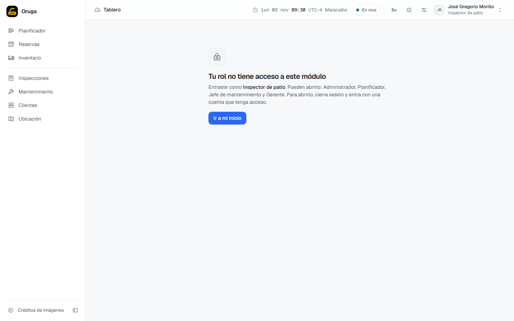
El inspector de patio intenta abrir el Tablero.
Si intentas una acción que tu rol no permite, el sistema la rechaza y muestra un mensaje de error.
Nada se modifica.
Recorrido: de la reserva a la devolución
El ciclo completo de un alquiler en Oruga, paso a paso, con el módulo donde ocurre cada parte.
Crea la reserva con cliente, fechas y equipo; Oruga cotiza la tarifa óptima y avisa si hay
conflictos. Se guarda como borrador.Planificador · Reservas › Nueva reserva o
Planificador
Compara la salida y la devolución para detectar daños nuevos y, si hace falta, programa una
orden de taller.Inspector y jefe de mantenimiento · Comparación y
Mantenimiento
Atajo desde el Tablero
La tarjeta Operaciones de hoy del Tablero lista las entregas y recepciones del día
con un botón Inspeccionar que abre directamente el formulario correcto.
Tablero
La visión del negocio en una pantalla: indicadores, analítica, alertas y la operación del día.
Indicadores principales
Al entrar, el Tablero te saluda por tu nombre y muestra accesos rápidos y cuatro indicadores con su
tendencia de los últimos 14 días.
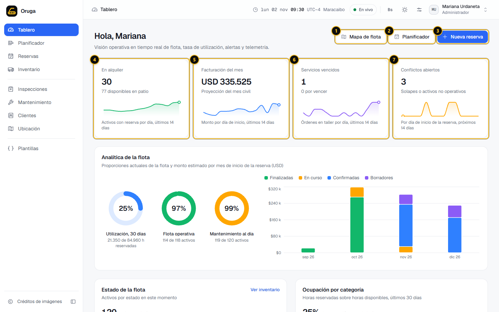
Tablero de un administrador.
1Mapa de flota. Abre el módulo Ubicación.
2Planificador. Abre el calendario de la flota.
3Nueva reserva. Abre el formulario de reserva.
4En alquiler. Activos alquilados y disponibles en patio.
Lleva al Inventario.
5Facturación del mes. Proyección de ingresos del mes en
curso.
6Servicios vencidos. Mantenimientos vencidos y por
vencer. Lleva a Mantenimiento.
7Conflictos abiertos. Solapes o reservas sobre activos
no operativos. Lleva al Planificador.
Analítica de la flota
Tres anillos resumen la salud de la flota y un gráfico de barras muestra el monto estimado por mes de
inicio de las reservas, separado por estado (finalizadas, en curso, confirmadas y borradores).
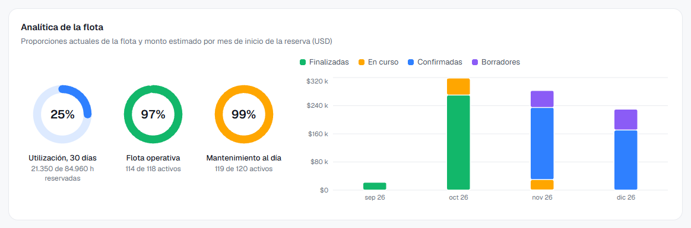
Utilización, flota operativa, mantenimiento al día y monto por mes.
Utilización, 30 días: horas reservadas sobre horas disponibles del último mes.
Flota operativa: activos en condiciones de trabajar sobre el total que no está de
baja.
Mantenimiento al día: activos sin servicios vencidos.
Estado de la flota y ocupación
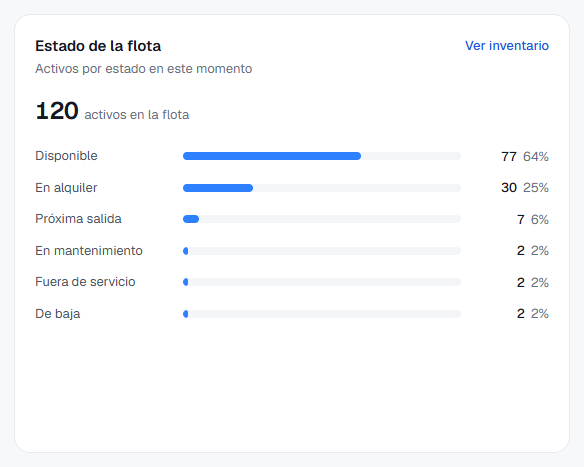
Activos por estado en este momento.
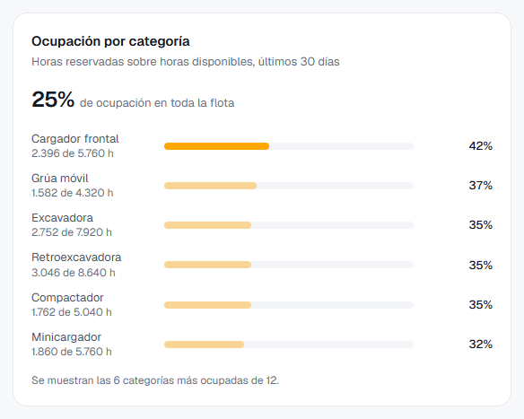
Las seis categorías más ocupadas.
Estado de la flota reparte los activos entre Disponible, En alquiler, Próxima salida,
En mantenimiento, Fuera de servicio y De baja; el enlace Ver inventario abre
el catálogo. Ocupación por categoría compara las horas reservadas con las disponibles
en los últimos 30 días.
Alertas accionables
Esta tarjeta reúne lo que necesita una decisión. Los filtros Todas,
Conflictos, Mantenimiento, Documentación y
Clientes muestran cuántas alertas hay de cada tipo. Cada alerta indica su gravedad y
trae un botón para resolverla:
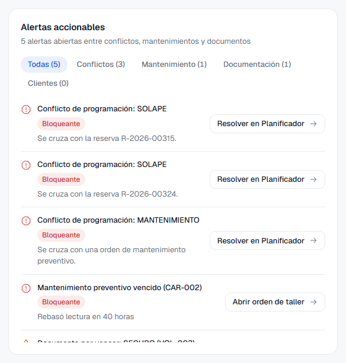
Alertas con su gravedad y la acción sugerida.
Gravedad
Significado
Bloqueante
Impide confirmar o despachar una reserva hasta resolverla.
Advertencia
Conviene revisarla, pero no impide operar.
Informativa
Aviso para tener en cuenta, sin acción urgente.
Los botones llevan al lugar exacto para resolver la alerta:
Resolver en Planificador, Abrir orden de taller,
Ver ficha de activo o Ver ficha del cliente.
Operaciones de hoy
Lista las Entrega inicial y Recepción de
contratos confirmados o en curso para la fecha de hoy, con el activo y el cliente. El botón
Inspeccionar abre el formulario de inspección ya vinculado a la reserva; los
roles que no inspeccionan ven Ver reserva.
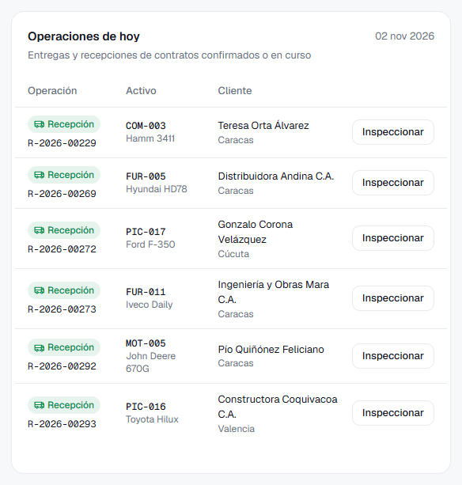
Entregas y recepciones previstas para hoy.
Planificador
Un calendario horizontal con una fila por activo. Aquí se crean, mueven y reasignan las reservas.
Vista del planificador
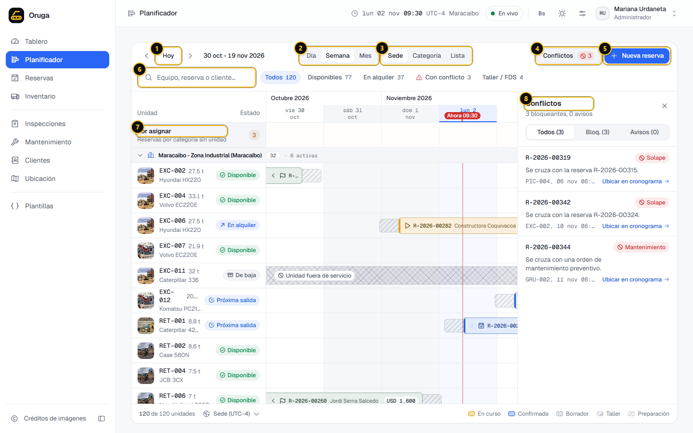
Planificador en escala semanal, agrupado por sede.
1Navegación. Retrocede, vuelve a
Hoy o avanza en el calendario.
2Escala. Día, Semana o Mes.
3Agrupación. Por Sede, por Categoría o en una Lista.
4Conflictos. Muestra u oculta el panel de conflictos con
su total.
5Nueva reserva. Abre el alta rápida.
6Búsqueda. Filtra por equipo, código de reserva o
cliente.
7Por asignar. Reservas hechas por categoría que aún no
tienen unidad.
8Panel de conflictos. Lista de bloqueos y avisos
abiertos.
Debajo de la búsqueda, los chips Todos, Disponibles,
En alquiler, Con conflicto y Taller / FDS filtran
las filas y muestran cuántas unidades hay en cada grupo. La línea roja marcada
Ahora señala el momento actual.
Leer el cronograma
Cada fila es un activo, con su foto, código, capacidad, modelo y estado. Pulsar la celda izquierda
abre la ficha del activo.
Cada barra es una reserva. Su color indica el estado; la leyenda está al pie del calendario:
En cursoConfirmadaBorrador.
Las zonas rayadas junto a las barras son el tiempo de preparación del equipo entre
un alquiler y otro (2 horas para vehículos y 8 horas para maquinaria).
Las unidades en taller o fuera de servicio muestran una franja rayada con el texto "Unidad en
taller" o "Unidad fuera de servicio".
Al pie, el selector de zona horaria del cronograma permite elegir en qué zona
horaria se muestran las horas.
Cambiar la escala y agrupar
La escala Mes ofrece una vista amplia para planificar con semanas de anticipación; la
escala Día permite ajustar horarios al detalle. Al arrastrar, las reservas se ajustan
a una rejilla acorde a la escala elegida.
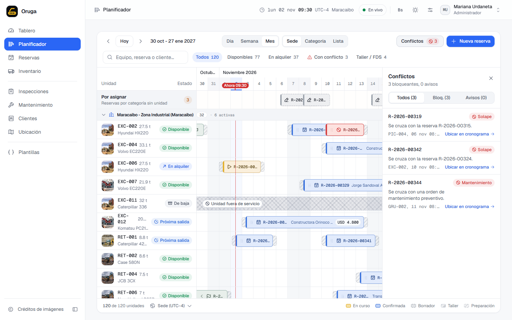
Escala mensual.
Crear una reserva rápida
Hay dos formas de abrir el alta rápida:
Pulsa Nueva reserva en la barra superior.
Haz clic en una zona libre de la fila de un activo. El diálogo se abre con ese equipo elegido y una
ventana de 24 horas desde el punto del clic.
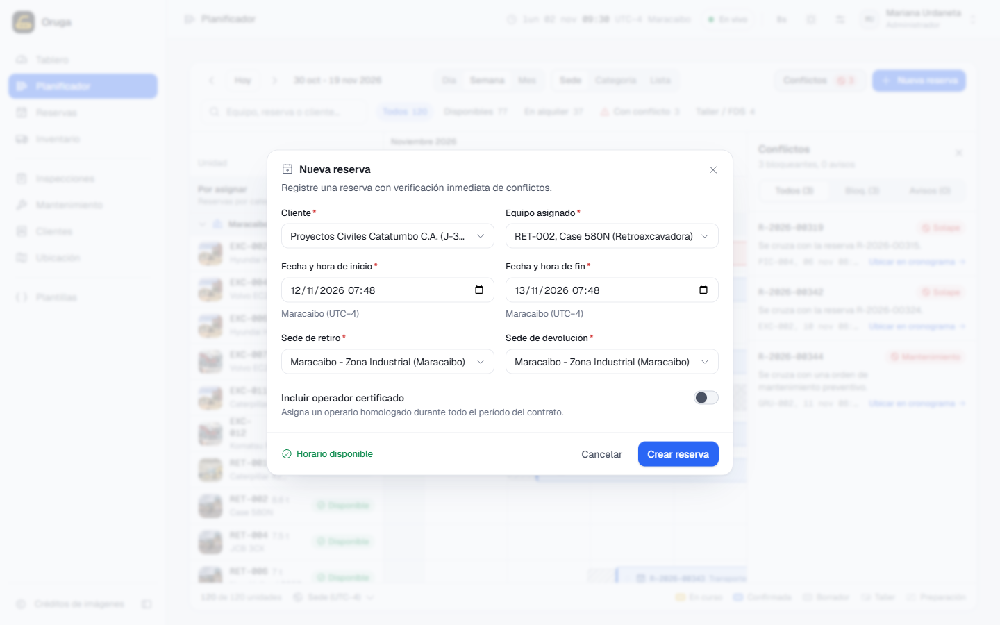
Alta rápida con el equipo preseleccionado y verificación inmediata.
Elige el Cliente y confirma el Equipo asignado.
Ajusta la Fecha y hora de inicio y de fin, y las sedes de retiro y
devolución.
Activa Incluir operador certificado si el cliente necesita un operario homologado.
Revisa el estado al pie del diálogo: Horario disponible,
Con advertencia operativa o
Conflicto bloqueante. Si hay advertencias, marca
"Acepto las advertencias operativas para registrar la reserva".
Pulsa Crear reserva. Un aviso confirma el código de la reserva
nueva.
Mover, redimensionar y reasignar
Las reservas en borrador o confirmadas se pueden ajustar arrastrando
su barra:
Cambiar las fechas: arrastra la barra hacia los lados.
Cambiar la duración: arrastra el borde izquierdo (inicio) o derecho (fin).
Cambiar de unidad: arrastra la barra a la fila de otro activo.
Mientras arrastras, una silueta muestra el resultado con un ícono: visto bueno, advertencia o bloqueo.
Al soltar:
Resultado
Qué pasa
Válido
El cambio se guarda y aparece el aviso "Reserva reprogramada".
Con advertencias
Se abre Confirmar asignación con advertencias. Escribe el motivo y pulsa
Confirmar con justificación; el motivo queda en la bitácora.
Bloqueado
El cambio no se aplica y un aviso explica la causa ("Asignación bloqueada: …").
Las reservas en curso solo admiten extender la fecha de fin. Para revertir el último
movimiento, pulsa Deshacer o usa Ctrl + Z.
Panel de conflictos
El panel de la derecha lista los conflictos abiertos con su tipo (por ejemplo
Solape o Mantenimiento). Las pestañas
Todos, Bloq. y Avisos los filtran.
Ubicar en cronograma desplaza el calendario hasta la reserva afectada para
resolverla arrastrándola. Cierra el panel con la × o con el botón
Conflictos.
Detalle de una reserva
Al pulsar una barra se abre un panel lateral con el cliente, el equipo, las fechas, las sedes y el
importe estimado, además de las acciones que permite su estado.
Ficha completa abre la página de la reserva con toda su información.
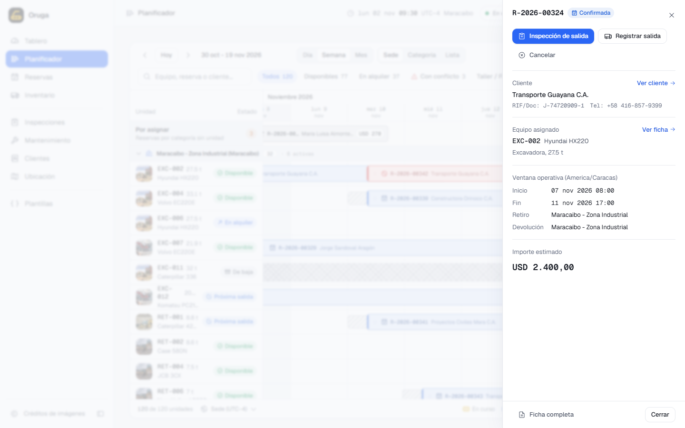
Panel de una reserva confirmada.
Estado
Acciones disponibles
Borrador
Confirmar reserva, Cancelar
Confirmada
Inspección de salida, Registrar salida,
Cancelar
En curso
Inspección de devolución, Registrar devolución
Reservas
Los contratos de alquiler: cómo crearlos, cotizarlos y llevarlos por cada estado.
Listado de reservas
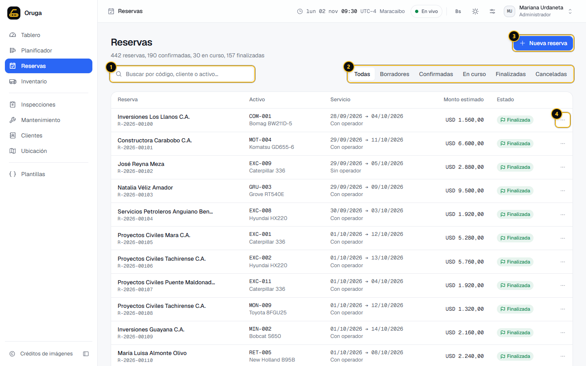
Listado con el resumen por estado.
1Búsqueda por código, cliente o activo.
2Filtro de estado: Todas, Borradores, Confirmadas, En
curso, Finalizadas o Canceladas.
3Nueva reserva.
4Acciones de la fila: ver ficha, confirmar, despachar,
registrar devolución o cancelar.
Cada fila muestra el cliente y el código, el activo, el período de servicio con o sin operador, el
monto estimado y el estado. Pulsa una fila para abrir su ficha.
Crear una reserva
El formulario completo se abre con Nueva reserva y se organiza en tres
bloques. A la derecha, el panel Tarifa óptima recalcula el importe con cada cambio.
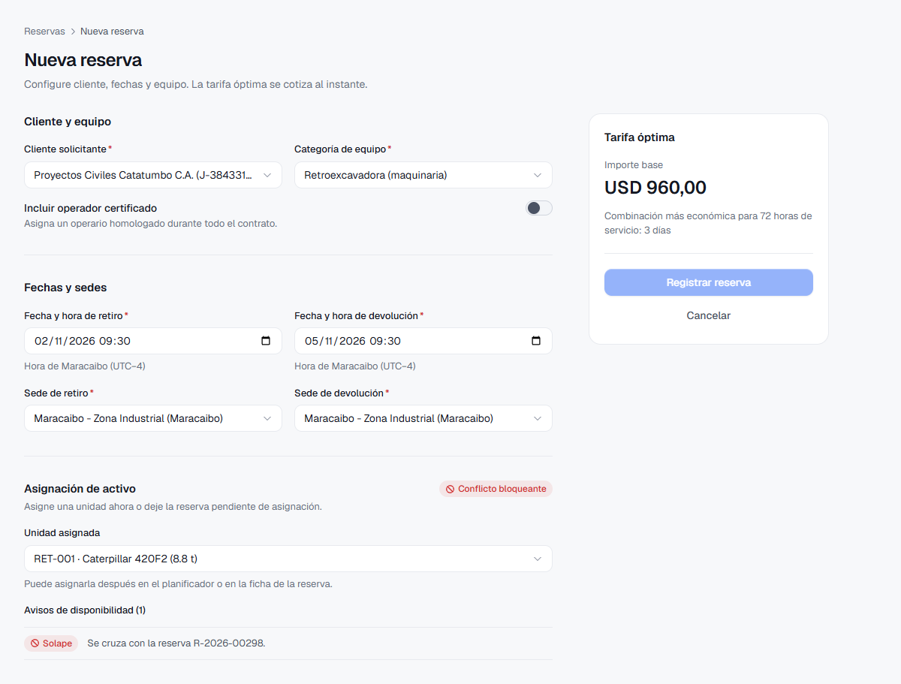
Nueva reserva con un aviso de disponibilidad sobre la unidad elegida.
Cliente y equipo. Elige el Cliente solicitante y la
Categoría de equipo. Si aún no hay clientes, el formulario ofrece el enlace
Crear cliente.
Operador. Activa Incluir operador certificado si corresponde.
Fechas y sedes. Indica la fecha y hora de retiro y de devolución (en la hora de la
sede) y las sedes de retiro y devolución.
Asignación de activo. Elige la Unidad asignada o deja
Sin asignar (por categoría) para decidir después en el Planificador. La leyenda indica si
cada unidad está disponible, tiene advertencias o un conflicto bloqueante.
Revisa los Avisos de disponibilidad. Si solo hay advertencias, marca la casilla
para aceptarlas.
Pulsa Registrar reserva. La reserva se crea como
borrador y se abre su ficha.
Reservar desde otras pantallas
Los botones Reservar activo de la ficha de un activo y
Nueva reserva
de la ficha de un cliente abren este formulario con el equipo o el cliente ya elegidos.
Cómo se calcula la tarifa óptima
Cada categoría tiene precios por hora, día, semana y mes. Oruga busca la combinación más barata que
cubra el tiempo del alquiler:
Se cuentan las horas reales con 29 minutos de gracia: pasado ese margen se cobra
una hora más (mínimo una hora).
Se combinan meses (720 horas), semanas, días y horas para obtener el menor importe.
Si cuesta menos, la combinación puede cubrir más tiempo del usado. Por ejemplo, seis días pueden
salir más baratos como una semana.
La maquinaria pesada no se alquila por horas: su combinación mínima es por días.
El panel muestra el importe base y la explicación, por ejemplo
"Combinación más económica para 72 horas de servicio: 3 días".
Conflictos y advertencias
Oruga valida la disponibilidad mientras completas la reserva. Hay dos niveles:
Tipo
Cuándo aparece
Efecto
Solape
La unidad ya tiene otra reserva en esas fechas.
Bloquea la confirmación y el despacho.
Mantenimiento
Hay una orden de taller programada en el período.
No operativo
La unidad está en taller, fuera de servicio o de baja.
Documento vencido
El seguro o el permiso vence antes de terminar la reserva.
Cliente bloqueado
El cliente tiene un bloqueo administrativo.
Tiempo de preparación
No queda el margen entre alquileres (2 h vehículos, 8 h maquinaria).
Advierte. Se puede continuar aceptando la advertencia.
Mantenimiento proyectado
El servicio preventivo vencería durante el alquiler.
Traslado entre sedes
Las sedes de retiro y devolución son distintas.
Ficha de la reserva
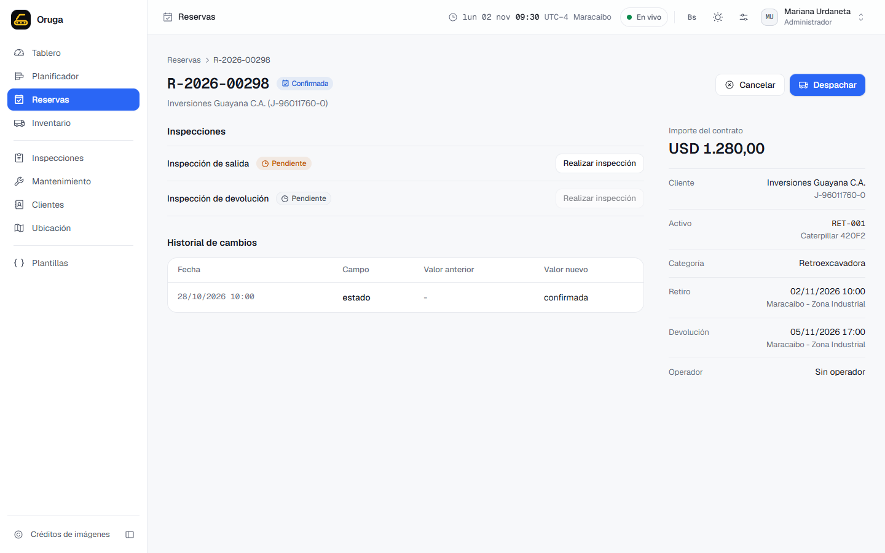
Reserva confirmada: falta la inspección de salida para poder despacharla.
Cabecera: código, estado y las acciones disponibles (Cancelar, Confirmar reserva, Despachar o
Registrar devolución).
Inspecciones: el estado de la inspección de salida y la de devolución (Pendiente
o Registrada) con los botones
Realizar inspección o Ver acta.
Historial de cambios: cada modificación con su fecha, el campo, el valor anterior y
el nuevo.
Panel lateral: importe del contrato, cliente, activo, categoría, retiro, devolución
y operador.
Ciclo de vida de una reserva
Acción
Cambio
Requisito
Quién
Confirmar reserva
Borrador → Confirmada
Unidad asignada, cliente sin bloqueo y sin conflictos bloqueantes.
Administrador, planificador
Despachar
Confirmada → En curso
Inspección de salida registrada y que no sea "No apto".
Administrador, planificador, inspector
Registrar devolución
En curso → Finalizada
Inspección de devolución registrada (cualquier veredicto).
Administrador, planificador, inspector
Cancelar
Borrador o Confirmada → Cancelada
Un motivo escrito.
Administrador, planificador
Si falta un requisito, la acción se rechaza con un mensaje claro; por ejemplo, al despachar sin
inspección: "Falta la inspección de salida."
Cancelar una reserva
En la ficha, pulsa Cancelar. El diálogo pide el
Motivo de cancelación; el botón Confirmar cancelación se
habilita al escribirlo. Descartar
cierra el diálogo sin cambios.
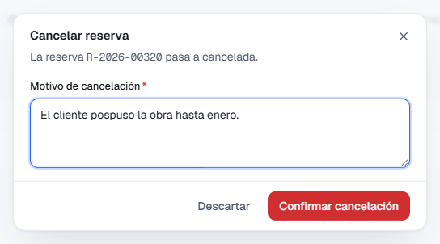
La cancelación siempre queda justificada.
Desde el menú de acciones del listado, Cancelar reserva se aplica de inmediato
y sin pedir motivo. Úsalo con cuidado; para dejar constancia del motivo, cancela desde la ficha.
Reservas de clientes bloqueados
Si eliges un cliente bloqueado, el formulario lo advierte bajo el selector. Puedes guardar la reserva
como borrador, pero no confirmarla hasta que se levante el bloqueo.
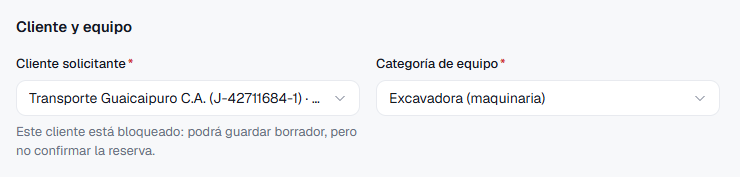
Aviso al elegir un cliente bloqueado.
Inventario
El catálogo de vehículos y maquinaria: búsqueda, disponibilidad, fichas técnicas y estado operativo.
Catálogo de activos
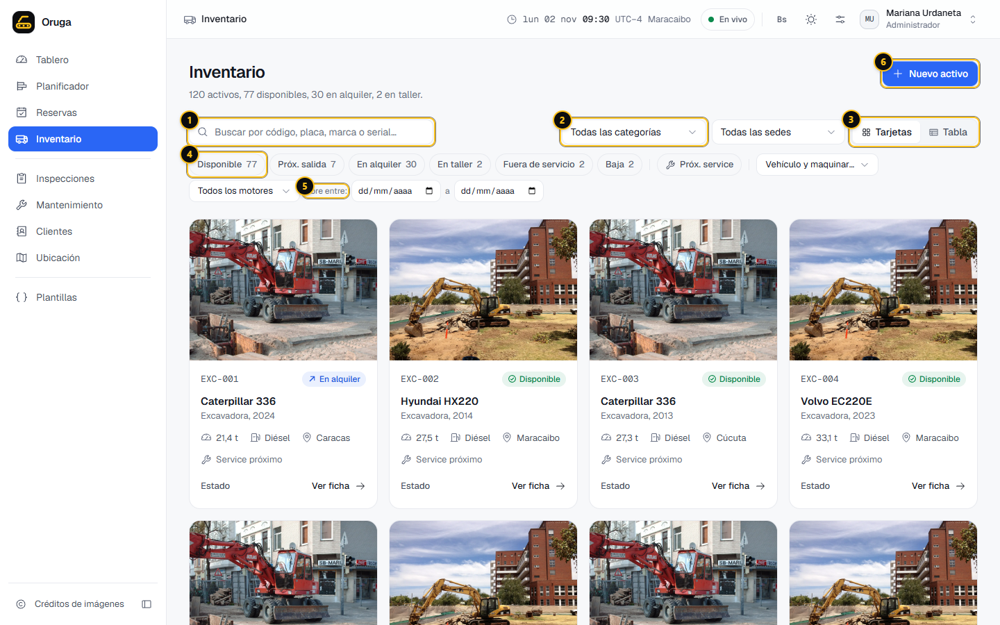
Inventario en vista de tarjetas.
1Búsqueda por código, placa, marca o serial.
2Categoría y sede. Junto a este selector está el de
sede.
3Vista de tarjetas o de tabla.
4Chips de estado con su conteo.
5Libre entre: muestra solo los activos libres en ese
rango de fechas.
6Nuevo activo.
Los chips filtran por Disponible, Próx. salida,
En alquiler, En taller, Fuera de servicio y
Baja, y Próx. service muestra los que tienen un mantenimiento
cercano. También puedes filtrar por tipo (vehículo o maquinaria) y por motor. Los filtros quedan en la
dirección de la página, así que puedes compartir el enlace con la búsqueda ya aplicada.
Cada tarjeta muestra la foto, el código, el estado, el modelo, el año, la capacidad, el combustible,
la sede y si el servicio está próximo. Ver ficha abre el detalle.
Vista de tabla
La vista de tabla resume más activos por pantalla con las columnas Unidad, Categoría, Sede base,
Capacidad, Lectura y Estado. El menú de cada fila ofrece Ver ficha completa y
Cambiar estado operativo.
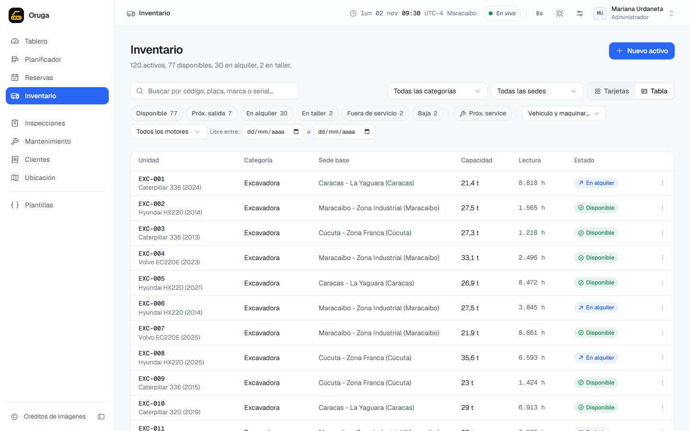
Inventario en vista de tabla.
Registrar un activo
Pulsa Nuevo activo y completa la ficha:
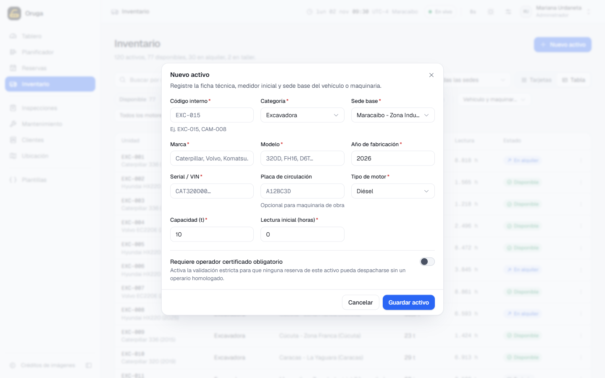
Alta de un activo.
Campo
Descripción
Código interno
Identificador único, por ejemplo EXC-015 o CAM-008.
Categoría y sede base
Tipo de equipo (define tarifas y plantilla de inspección) y sede donde se guarda.
Marca, modelo y año
Datos de fabricación.
Serial / VIN y placa
La placa es opcional para maquinaria de obra.
Tipo de motor y capacidad
Combustible y capacidad en la unidad de la categoría (toneladas, pasajeros…).
Lectura inicial
Horómetro (horas) u odómetro (km), según la categoría.
Requiere operador certificado
Si se activa, toda reserva del equipo debe incluir un operador homologado para poder
despacharse.
Pulsa Guardar activo. El nuevo activo aparece en el catálogo, el
Planificador y el mapa.
Ficha del activo
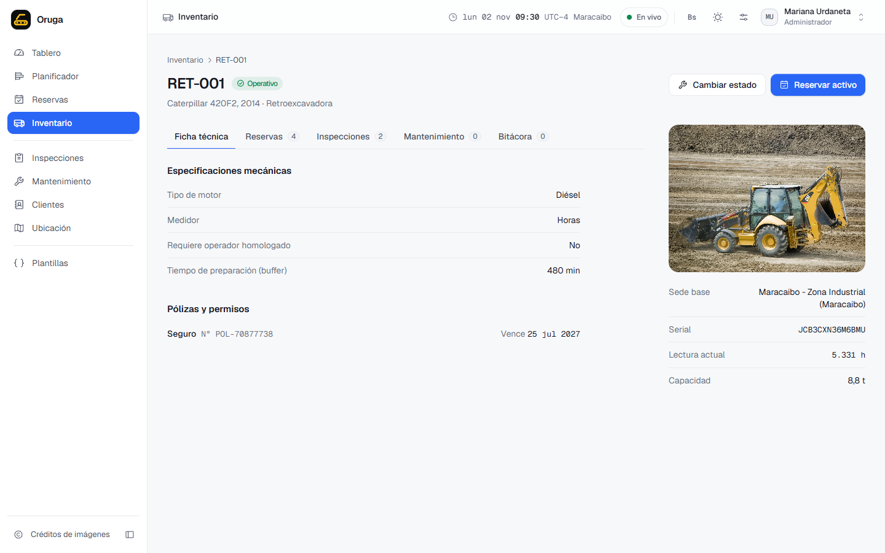
Ficha técnica de una retroexcavadora.
La ficha se organiza en pestañas, cada una con su conteo:
Ficha técnica: especificaciones mecánicas (motor, medidor, operador, tiempo de
preparación) y pólizas y permisos con su número y vencimiento.
Reservas e Inspecciones: el historial del equipo.
Mantenimiento: las órdenes de taller del activo.
Bitácora: los cambios manuales de estado con su motivo.
En la cabecera están Cambiar estado y
Reservar activo. El panel lateral resume sede, serial, lectura actual
y capacidad.
Cambiar el estado operativo
Desde la ficha (Cambiar estado), desde la tarjeta (Estado) o desde el menú de la tabla se abre el diálogo de cambio de estado. Elige el nuevo estado y escribe
el motivo técnico, que es obligatorio y queda en la bitácora.
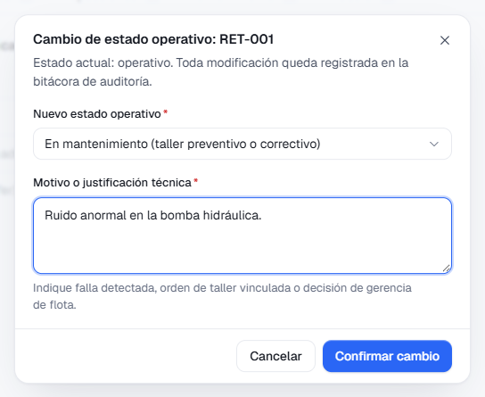
Todo cambio de estado exige una justificación.
Estado operativo
Uso
Operativo
Disponible para alquiler.
En mantenimiento
En taller por un servicio preventivo o correctivo.
Fuera de servicio
Avería o siniestro; no se puede alquilar.
Baja definitiva
Retirado de la flota.
Los estados Disponible, Próxima salida y
En alquiler no se eligen a mano: Oruga los calcula a partir de las reservas de un
activo operativo.
Inspecciones
Actas de salida, devolución y rutina generadas desde plantillas, con veredicto automático y
comparación.
Listado de inspecciones
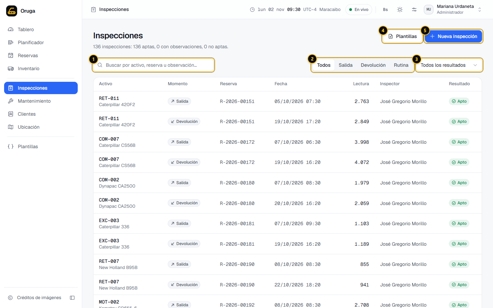
Listado de inspecciones con su resultado.
1Búsqueda por activo, reserva u observación.
2Momento: Todos, Salida, Devolución o Rutina.
3Resultado: Apto, Apto con observaciones o No apto.
4Plantillas. Abre el editor de plantillas.
5Nueva inspección.
Realizar una inspección
Puedes empezar una inspección desde varios lugares; cuando la abres desde una reserva, el formulario
ya llega con el activo, la reserva y el momento correctos:
La ficha de la reserva: Realizar inspección.
El Tablero, en Operaciones de hoy: Inspeccionar.
El panel de la reserva en el Planificador: Inspección de salida o
Inspección de devolución.
El listado: Nueva inspección, para inspecciones de rutina o
eligiendo la reserva a mano.
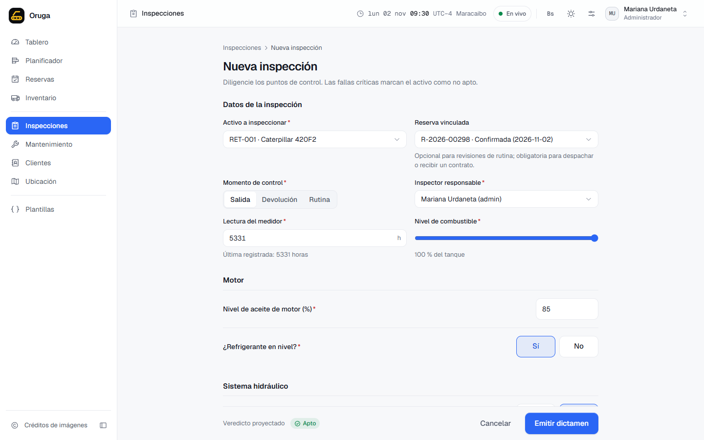
Datos de la inspección y primeras secciones de la plantilla.
Datos de la inspección. Confirma el Activo a inspeccionar, la
Reserva vinculada, el Momento de control (Salida, Devolución o Rutina) y el
Inspector responsable. Al vincular una reserva confirmada se elige "Salida"; si está en
curso, "Devolución".
Lectura del medidor. Escribe la lectura actual; no puede ser menor que la última
registrada, que se muestra como referencia.
Nivel de combustible. Ajusta la barra en pasos de 5 %.
Puntos de control. Responde cada sección de la plantilla. Según el tipo de punto,
pulsa Sí o No, elige una opción, escribe un valor o
sube fotos. Los puntos marcados Crítico son decisivos para el
veredicto.
Observaciones. Agrega notas y evidencias fotográficas generales.
Emitir dictamen. Revisa el veredicto proyectado al pie y pulsa
Emitir dictamen.
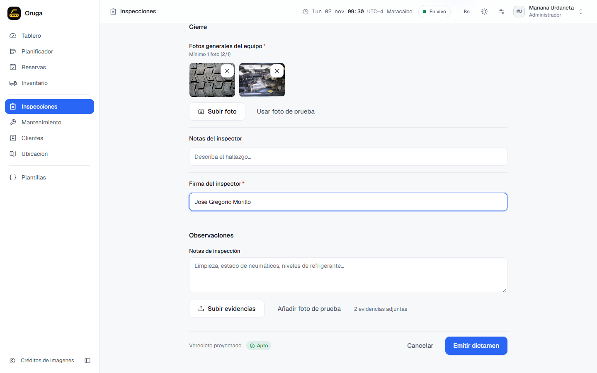
Fotos, firma y barra inferior con el veredicto proyectado.
Las fotos se agregan con Subir foto. Cada campo indica el mínimo exigido, por
ejemplo "Mínimo 1 foto (2/1)". El botón Usar foto de prueba agrega una imagen
de ejemplo y sirve para practicar sin cámara.
Campos condicionales
Algunas preguntas solo aparecen según una respuesta anterior. Por ejemplo, en la plantilla de
retroexcavadora, al responder Sí a "¿Hay fugas de aceite hidráulico?" aparecen
Ubicación de la fuga y Fotos de la fuga, ambas obligatorias. El punto fallido se
marca con Falla crítica o Falla.
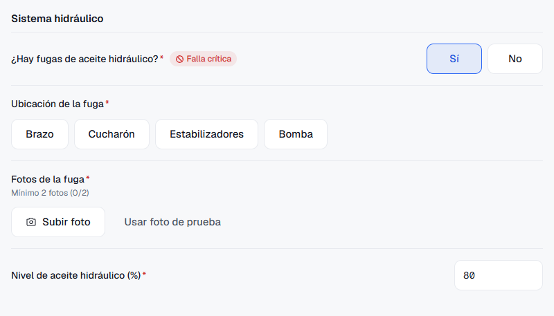
Al indicar una fuga se piden su ubicación y fotos.
El veredicto
Oruga calcula el veredicto en vivo mientras respondes y lo muestra en la barra inferior:
Veredicto
Cuándo
Consecuencia
Apto
Ningún punto falla y no hay notas.
El equipo puede salir o volver al patio sin observaciones.
Apto con observaciones
Falla algún punto no crítico o se escribió alguna nota.
El equipo puede operar; las observaciones quedan en el acta.
No apto
Falla algún punto crítico visible.
No se puede despachar. El activo pasa a fuera de servicio y se crea una orden
correctiva automática.
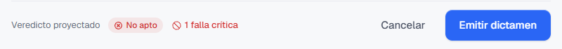
Una falla crítica proyecta un veredicto "No apto".
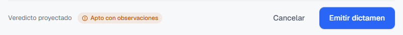
Fallas no críticas y una nota: "Apto con observaciones".
Si falta un dato obligatorio, el formulario lo señala al intentar emitir: por ejemplo
"Se necesitan al menos N fotos." o
"La lectura no puede ser menor a la última registrada".
El acta de inspección
Al emitir el dictamen se genera el acta, que ya no se puede modificar. Muestra el resultado de cada
punto de control (los críticos y los fallidos van marcados), las evidencias y las observaciones. El
panel
Datos resume el número de acta, momento, fecha, inspector, reserva, medidor y
combustible.
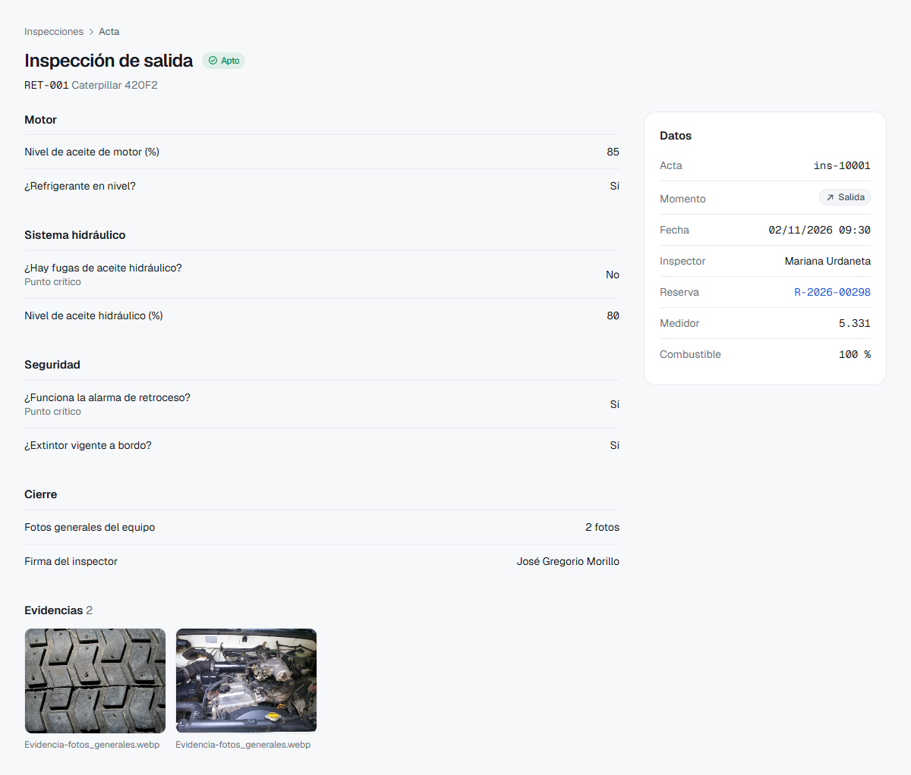
Acta de una inspección de salida apta.
Comparar salida y devolución
Cuando una reserva tiene las dos inspecciones, el acta muestra el botón
Comparar con contraparte. La comparación pone lado a lado ambas actas:
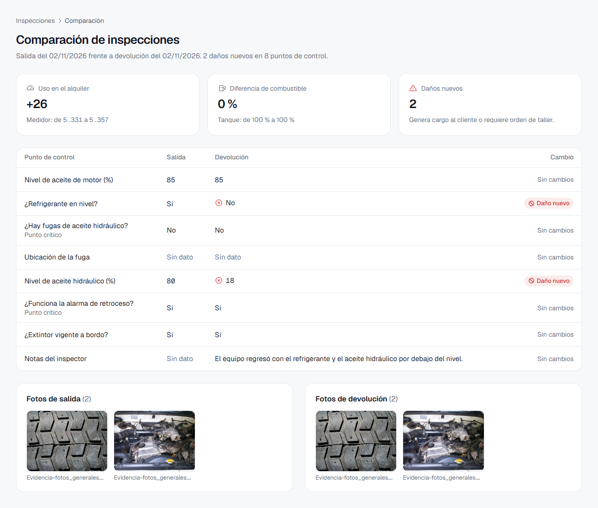
Comparación con dos daños nuevos detectados al regresar.
Uso en el alquiler: diferencia de lectura del medidor entre la salida y la
devolución.
Diferencia de combustible: en rojo si el equipo volvió con menos combustible.
Daños nuevos: fallas que no estaban al salir. Pueden generar un cargo al cliente o
requerir una orden de taller.
En la tabla, la columna Cambio clasifica cada punto:
Daño nuevo, Reparado,
Preexistente o Sin cambios. Al final se
muestran las fotos de salida y de devolución.
Plantillas de inspección
Los formularios de inspección se definen como plantillas editables. Solo el administrador puede
modificarlas.
El editor de plantillas
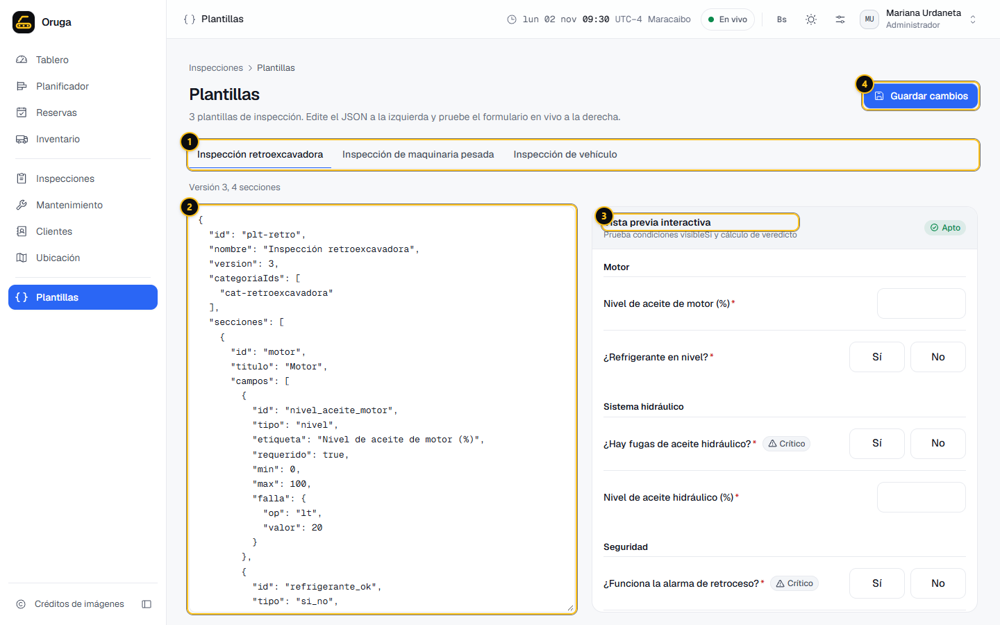
Editor con la definición a la izquierda y la vista previa a la derecha.
1Plantillas: retroexcavadora, maquinaria pesada y
vehículo.
2Definición en formato JSON.
3Vista previa interactiva con el veredicto en vivo.
4Guardar cambios.
Cada plantilla se aplica a una o más categorías de equipo y se divide en secciones con puntos de
control. Cada punto define su tipo (sí o no, nivel, número, opción, varias opciones, texto, foto o
firma), si es obligatorio o crítico, la condición que lo hace fallar y, si corresponde, la condición
visibleSi que lo muestra solo según otra respuesta.
La vista previa se actualiza al escribir, así que puedes probar las condiciones y el veredicto antes
de guardar.
Validación y versiones
Si la definición tiene un error, el recuadro Errores de validación del esquema lo
explica (por ejemplo "Sintaxis JSON no válida.", "Id de campo repetido" o
"La condición menciona un campo inexistente") y el botón de guardar se desactiva hasta
corregirlo.
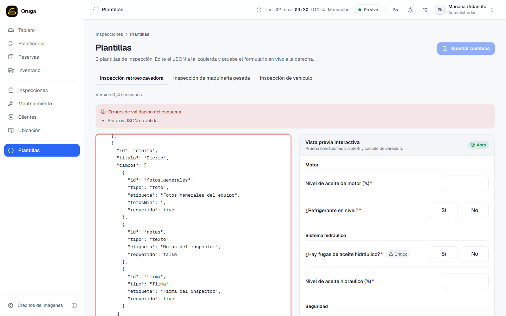
Una coma faltante impide guardar la plantilla.
Cada vez que guardas se crea una versión nueva ("Plantilla guardada (vN)"). Las
inspecciones ya emitidas conservan la versión con la que se hicieron, de modo que cambiar una
plantilla nunca altera actas anteriores. La gerencia puede consultar las plantillas en modo de solo
lectura.
Mantenimiento
Órdenes de taller preventivas y correctivas, y planes que calculan cuándo toca cada servicio.
Órdenes de taller
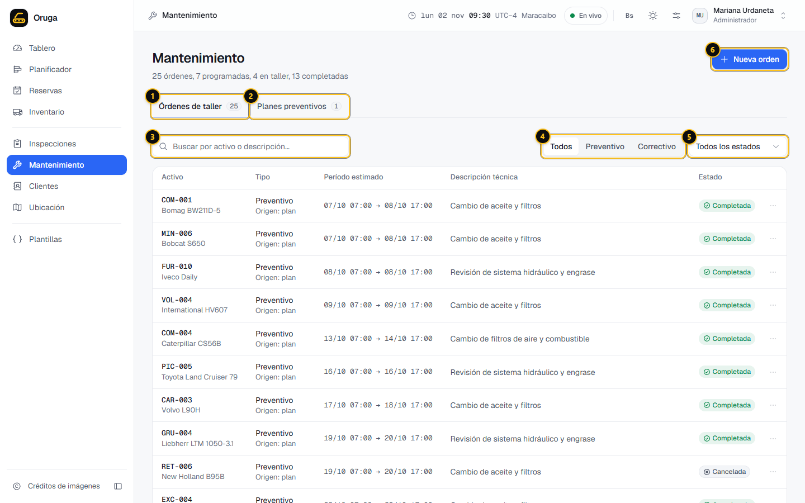
Pestaña de órdenes de taller.
1Órdenes de taller con su total.
2Planes preventivos.
3Búsqueda por activo o descripción.
4Tipo: Todos, Preventivo o Correctivo.
5Estado: Programadas, En taller, Completadas o
Canceladas.
6Nueva orden.
Cada orden muestra el activo, el tipo con su origen (plan, inspección o manual), el período estimado,
la descripción técnica y el estado: Programada,
En taller, Completada o
Cancelada.
Programar una orden
Pulsa Nueva orden y completa:
Activo a intervenir.
Tipo de mantenimiento: preventivo (plan por horas o km) o correctivo
(reparación de avería).
Fecha y hora de inicio y fin estimado, en la hora local de la
sede.
Descripción del trabajo.
Pulsa Crear orden. La orden queda programada y
bloquea las reservas del activo en ese período.
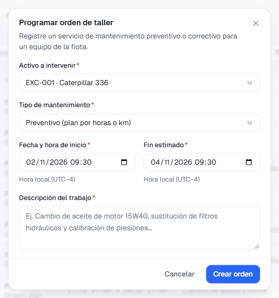
Diálogo para programar una orden.
Iniciar y cerrar una orden
El menú ⋯ de cada orden ofrece las acciones según su estado:
Iniciar en taller: la orden pasa a "En taller" y el activo queda en
mantenimiento.
Completar y cerrar orden: disponible cuando la orden está en taller.
Cancelar orden.
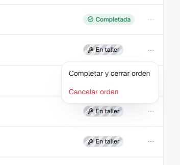
Acciones de una orden en taller.
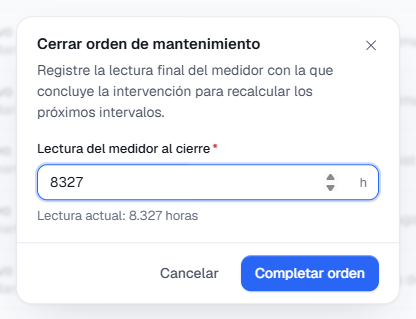
Cierre con la lectura final del medidor.
Para cerrar, registra la Lectura del medidor al cierre y pulsa
Completar orden. Al cerrar una orden preventiva,
Oruga toma esa lectura y la fecha de hoy como último servicio, y recalcula los próximos vencimientos.
El activo vuelve a estar operativo, salvo que tenga otra orden abierta.
Planes preventivos
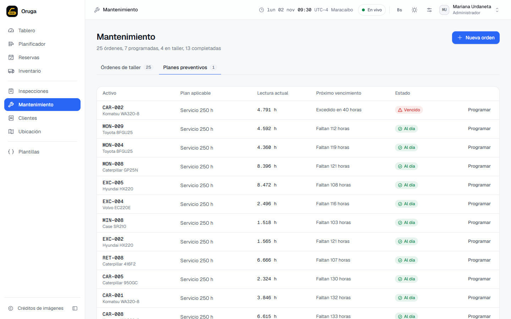
Próximos vencimientos de cada activo.
Esta pestaña muestra, para cada activo, el plan aplicable, la lectura actual, el próximo vencimiento
("Faltan 112 horas", "Excedido en 40 horas", "En 30 días") y su estado. El botón
Programar abre una orden nueva con el activo ya elegido.
Plan
Intervalo
Aviso "por vencer"
Servicio 250 h (maquinaria)
Cada 250 horas de uso
25 horas antes
Servicio 10.000 km (vehículos)
Cada 10.000 km
800 km antes
Revisión semestral
Cada 180 días
15 días antes
El vencimiento llega con lo que ocurra primero, la lectura o la fecha. El estado es
Al día, Por vencer dentro del margen de
aviso, o Vencido al superar el intervalo.
Clientes
El directorio de empresas y personas que alquilan equipos, con su historial y bloqueos.
Directorio de clientes
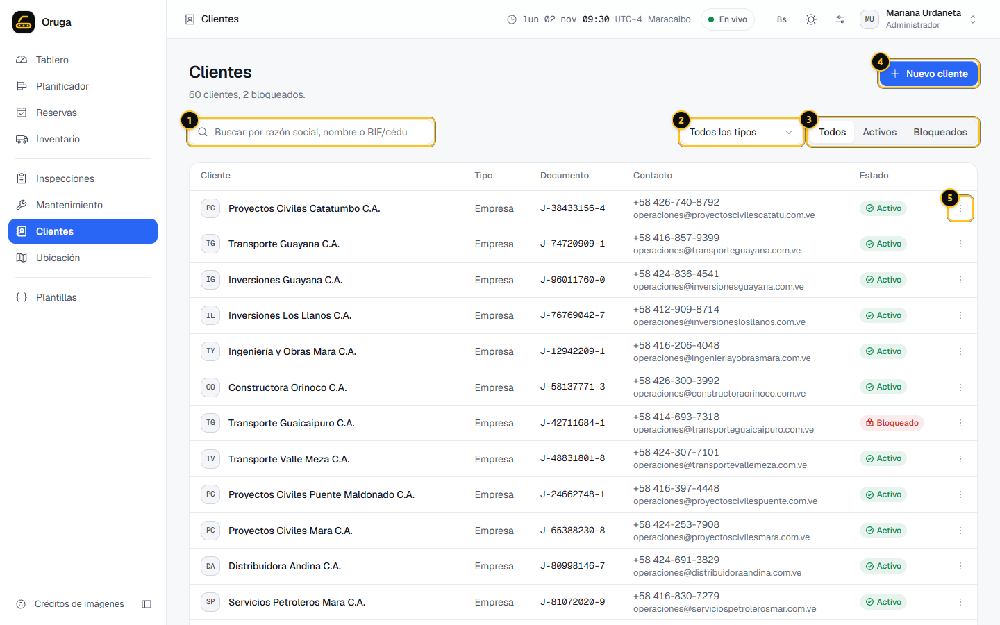
Directorio de clientes.
1Búsqueda por razón social, nombre o RIF/cédula.
2Tipo: empresas o personas naturales.
3Estado: Todos, Activos o Bloqueados.
4Nuevo cliente.
5Acciones: ver ficha, bloquear o desbloquear.
Registrar un cliente
Pulsa Nuevo cliente, elige si es una
empresa o constructora o una persona natural, y completa el
nombre, el documento, el teléfono y el correo.
Oruga valida los datos al pulsar Crear cliente y explica cualquier
error, como en la figura.
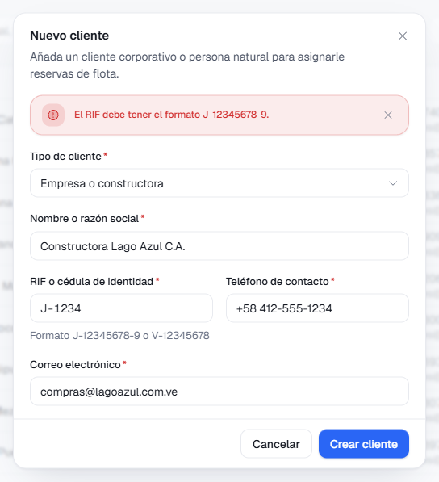
El RIF no tiene el formato correcto.
Dato
Formato válido
Ejemplo
RIF (empresas)
Letra, guion, 8 dígitos, guion y dígito verificador
J-12345678-9
Cédula (personas)
V o E, guion y de 6 a 9 dígitos (también se acepta un RIF)
V-12345678
Teléfono
De 7 a 20 caracteres entre dígitos, espacios, guiones y paréntesis; puede empezar con +
+58 412-555-1234
Correo
Dirección de correo válida
compras@empresa.com
No se puede registrar dos veces el mismo documento: Oruga avisa
"Ya existe un cliente con ese documento."
Ficha del cliente
Ficha de un cliente bloqueado con su historial.
Reservas totales y Facturación acumulada: la suma de los importes
estimados de sus reservas confirmadas, en curso y finalizadas.
Historial de alquileres y contratos: código, período, operador, importe, estado y
el enlace Ver contrato.
Nueva reserva: abre el formulario con este cliente ya elegido.
Bloquear y desbloquear
El bloqueo administrativo (por deuda, incumplimiento u otra causa) se activa con
Bloquear cliente en la ficha o en el menú del listado, y se retira con
Desbloquear. El cambio es inmediato. Mientras un cliente está bloqueado:
Puedes guardar reservas suyas como borrador, pero no confirmarlas.
Sus reservas ya confirmadas tampoco se pueden despachar: el bloqueo es un conflicto
bloqueante.
El Tablero muestra una alerta "Reserva con cliente bloqueado" en la categoría Clientes.
Ubicación y telemetría
Dónde está cada equipo, qué está haciendo y si se salió de la obra autorizada.
Mapa de flota
Mapa de flota con el panel de telemetría.
1Capas: muestra u oculta las geocercas y las sedes.
2Búsqueda por código, modelo o cliente.
3Filtros por sede y por estado.
4Alertas de geocerca. Pulsa
Filtrar para ver solo esos activos.
5Mapa con un marcador por activo.
El panel Telemetría de Flota lista los activos visibles con su modelo, estado, sede,
cliente si está alquilado, coordenadas GPS y lectura. Las etiquetas
Fuera de obra y En tránsito resaltan los
casos que requieren atención. Pulsa una fila para centrar el mapa en ese activo.
Los equipos alquilados reportan su posición cada 4 segundos. El color del marcador indica el estado:
Color
Estado
Verde
Disponible
Azul
En alquiler
Ámbar
Próxima salida
Violeta
En mantenimiento
Rosa
Fuera de servicio
Gris
De baja
Amarillo
Activo seleccionado
El mapa necesita Internet
Las calles y ciudades del mapa se descargan de OpenStreetMap. Sin conexión, los marcadores siguen
visibles pero el fondo del mapa se verá gris.
Ficha flotante del activo
Al elegir un activo, el mapa vuela hasta su posición y abre una ficha flotante con la lectura actual,
la sede base, el último reporte, la motorización y el contrato vigente. Si el equipo está fuera de su
obra aparece
Alerta de Geocerca Activa; si no, "Dentro del perímetro de obra autorizado".
Abrir ficha completa del activo lleva al Inventario y
Ver todo
vuelve a la vista general.
Un activo alquilado fuera del radio de su obra.
Geocercas
Cada equipo alquilado tiene una geocerca: un círculo de 1200 metros alrededor de la
obra donde debe trabajar. Si su posición sale de ese radio, Oruga genera una alerta de geocerca, marca
el activo como "Fuera de obra" y muestra en su ventana emergente
"¡Fuera del radio de obra autorizado!". Al pulsar el círculo verás el radio permitido y la
distancia actual.
Otras pantallas y herramientas
Créditos, páginas de error y el panel para probar la aplicación en distintas condiciones.
Créditos de imágenes
Las fotografías de equipos y escenas provienen de Wikimedia Commons con licencias libres. La página
Créditos de imágenes, al pie del menú lateral, lista cada foto con su autor,
su licencia y un enlace a la fuente original.
Autores y licencias de las fotografías.
Página no encontrada
Si una dirección no existe, Oruga muestra "Esta ruta no existe" con la dirección escrita y el
botón Ir a mi inicio.
Página no encontrada.
Panel de desarrollo
El botón con el ícono de controles deslizantes, en la cabecera, abre el
Panel de desarrollo. Sirve para demostraciones y pruebas, porque simula condiciones
difíciles de reproducir. Sus ajustes se pierden al recargar la página.
Latencia: Sin retardo, Normal o Lenta, para ver los estados de carga.
Forzar error: hace que las escrituras respondan con un error 500 (servidor) o
409 (conflicto), solo la próxima vez o siempre.
Tiempo real: el interruptor Recibir eventos pausa o reanuda las
actualizaciones en vivo.
Falla de evidencias: probabilidad de que falle la subida de una foto.
Base de datos local:Vaciar base de datos elimina
activos, clientes, reservas, órdenes e inspecciones.
Vaciar la base no se puede deshacer
Borra toda la información operativa guardada en el navegador. Las cuentas y los catálogos se
conservan.
Panel de desarrollo.
Preguntas frecuentes
Mensajes habituales, qué significan y cómo resolverlos.
Acceso y datos
Situación
Solución
"Correo o clave incorrectos."
Revisa mayúsculas y espacios. Las cuentas de demostración usan la clave oruga2026.
Recuerda que las cuentas creadas existen solo en el navegador donde se registraron.
No puedo iniciar sesión desde otra dirección de red.
Abre Oruga desde localhost o un sitio con HTTPS.
La sesión se cerró sola y volví al acceso.
La sesión dejó de ser válida, por ejemplo tras borrar los datos del navegador. Vuelve a entrar;
Oruga te devuelve a la página en la que estabas.
 Gerente
Gerente